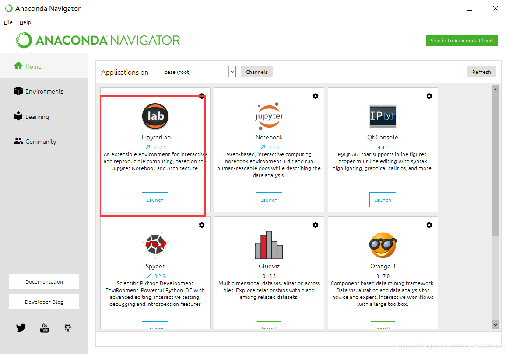
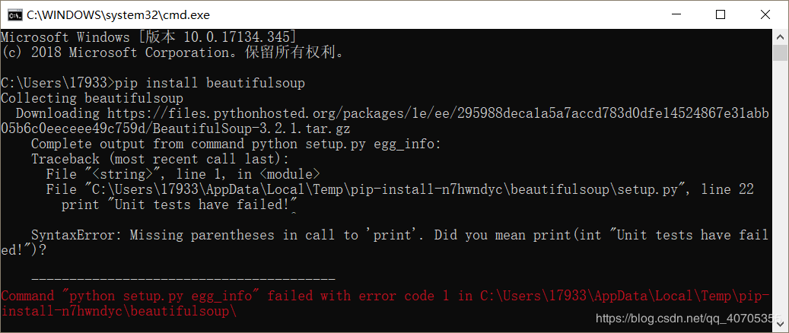
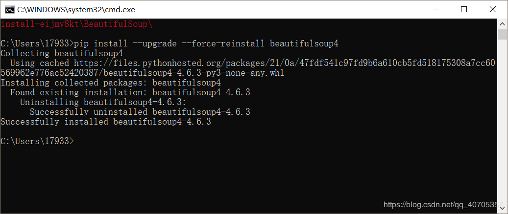
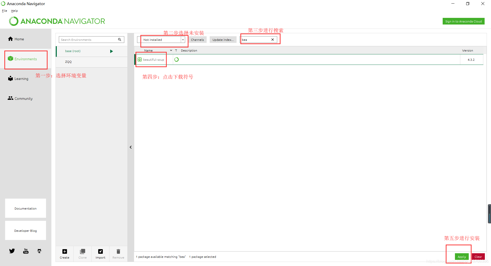
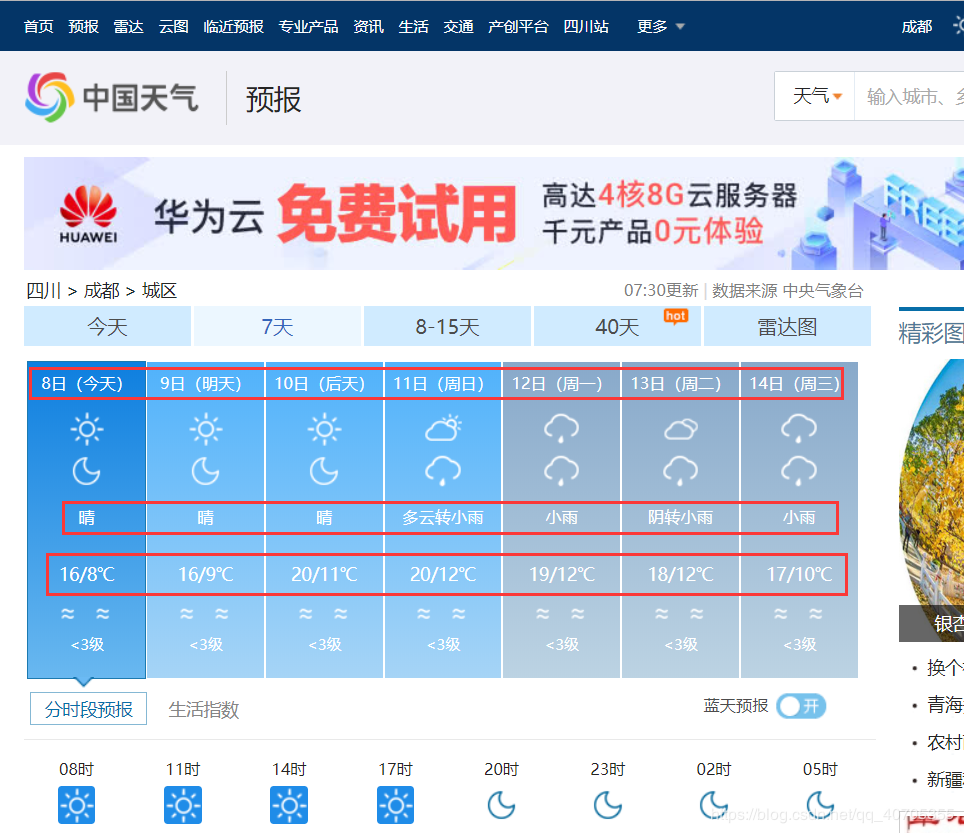
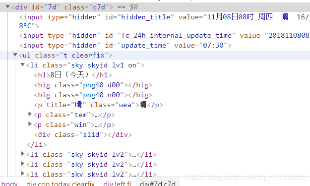
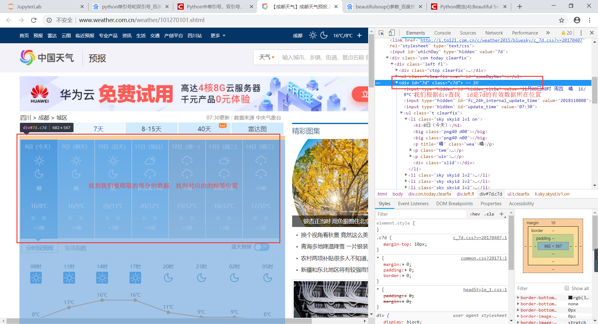

最近学校刚开始开设爬虫课，我也刚刚如入门，尝试写了一个爬去成都市的一周的天气预报。
一、软件和库的准备：
-
python环境安装配置：安装python所需要的环境（此处就不详细的进行说明了，百度查询），最好是使用python3.x版本，虽然现在大部分公司的项目都还是在使用2.x版本，但是3.x才是目前主流的，以后的项目肯定使用3.x居多。
-
编辑器：选择一个合适的编辑器，python有许多编辑器，但是题主推荐使用pycharm和jupyter，具体安装过程这里就不再进行说明，安装jupyter使用Anaconda一体式安装要方便快捷一点。
-
需要使用到的库：这里我们要使用的库主要有urllib.request、csv以及BeautifulSoup

-
urllib库：这个安装python自带的库，也可以使用第三方更加方便强大的库requests，这个库需要自己去手动安装，在cmd里面使用pip install requests安装就好了
-
csv库：属于安装pytohn环境自带的库，不需要再去手动安装
-
BeautifulSoup库：这个库需要手动安装，BeautifulSoup是一个网页解析库，它支持很多解析器，不过最主流的有两个。一个是python标准库，一个是lxml HTML 解析器。两者的使用方法相似：
from bs4 import BeautifulSoup
# Python的标准库
BeautifulSoup(html, 'html.parser'``)
# lxml
BeautifulSoup(html, 'lxml'``)
-
使用pip安装 pip install beautifulsoup安装，如果出现这种问题：
SyntaxError: Missing parentheses in call to ‘print’. Did you mean print(int “Unit tests have failed!”)?
----------------------------------------
Command “python setup.py egg_info” failed with error code 1 in C:\Users\17933\AppData\Local\Temp\pip-install-n7hwndyc\beautifulsoup\
是因为是python3.6对beautifulsoup4支持不够好

就需要使用pip install --upgrade --force-reinstall beautifulsoup4安装；

如果是使用的Anaconda安装就方便多了，直接在环境里面点击安装就好了

二、爬虫的编写：
-
相关包的导入：
1
2
3
| import csv
import urllib.request
from bs4 import BeautifulSoup ## 引入解析模块BS4
|
-
模拟浏览器得到数据
1
2
3
4
5
6
7
8
| url = "http://www.weather.com.cn/weather/101270101.shtml"
header = ("User-Agent","Mozilla/5.0 (Windows NT 10.0; Win64; x64) AppleWebKit/537.36 (KHTML, like Gecko) Chrome/69.0.3497.100 Safari/537.36") # 设置头部信息
opener = urllib.request.build_opener() # 修改头部信息
opener.addheaders = [header] #修改头部信息
request = urllib.request.Request(url) # 制作请求
response = urllib.request.urlopen(request) # 得到请求的应答包
html = response.read() #将应答包里面的内容读取出来
html = html.decode('utf-8') # 使用utf-8进行编码，不重新编码就会成乱码
|
-
查找要爬取的部分
我们在页面上找到我们所需要的信息部分 ，我们需要日期、天气以及温度

找到对应的代码部分

全图如下:

1
2
3
4
5
| # 以上部分的代码如下：
final = [] #初始化一个空的list，我们为将最终的的数据保存到list
bs = BeautifulSoup(html,"html.parser") # 创建BeautifulSoup对象
body = bs.body # 获取body部分
data = body.find('div',{'id':'7d'}) # 找到id为7d的div
|
之后我们再往下看，我们所需要的信息都存在ul标签中，我们需要查找ul标签
1
| ul = data.find('ul') # 获取ul部分，由于ul标签只有一个 我们使用find()函数，如果有多个我们使用find_all()
|
所需要的信息在ul标签里面的li标签内部，而且不止一个，所以我们需要使用find_all()方法
1
| li = ul.find_all('li') # 获取所有的li 返回的是list对象
|
4.对查找到部分进行数据的爬取
我们最后将所有的数据保存在list之中在进行写入文件
日期在li标签的h1标签之中
天气在li标签的第一个p标签之中
温度在第二个p标签之中的span标签之中
1
2
3
4
5
6
7
8
9
10
11
12
13
14
15
16
17
18
19
20
21
22
23
| i = 0
for day in li: # 对每个li标签中的内容进行遍历
if i < 7:
temp = []
date = day.find('h1').string # 找到日期
# print (date)
temp.append(date) # 添加到temp中
# print (temp)
inf = day.find_all('p') # 找到li中的所有p标签
# print(inf)
# print (inf[0])
temp.append(inf[0].string) # 第一个p标签中的内容（天气状况）加到temp中
if inf[1].find('span') is None:
temperature_highest = None # 天气预报可能没有当天的最高气温（到了傍晚，就是这样），需要加个判断语句,来输出最低气温
else:
temperature_highest = inf[1].find('span').string # 找到最高温度
temperature_highest = temperature_highest.replace('℃', '') # 到了晚上网站会变，最高温度后面也有个℃
temperature_lowest = inf[1].find('i').string #找到最低温度
temperature_lowest = temperature_lowest.replace('℃', '') # # 最低温度后面有个℃，去掉这个符号
temp.append(temperature_highest)
temp.append(temperature_lowest)
final.append(temp) # 将每一次循环的list的内容都插入最后保存数据的list
i = i +1
|
5.写入文件：
1
2
3
| with open('weather.csv', 'a', errors='ignore', newline='') as f:
f_csv = csv.writer(f)
f_csv.writerows(final)
|
三、全部代码
1
2
3
4
5
6
7
8
9
10
11
12
13
14
15
16
17
18
19
20
21
22
23
24
25
26
27
28
29
30
31
32
33
34
35
36
37
38
39
40
41
42
43
44
45
46
47
48
49
50
51
| import csv
import urllib.request
from bs4 import BeautifulSoup
url = "http://www.weather.com.cn/weather/101270101.shtml"
header = ("User-Agent","Mozilla/5.0 (Windows NT 10.0; Win64; x64) AppleWebKit/537.36 (KHTML, like Gecko) Chrome/69.0.3497.100 Safari/537.36") # 设置头部信息
opener = urllib.request.build_opener() # 修改头部信息
opener.addheaders = [header] #修改头部信息
request = urllib.request.Request(url) # 制作请求
response = urllib.request.urlopen(request) # 得到请求的应答包
html = response.read() #将应答包里面的内容读取出来
html = html.decode('utf-8') # 使用utf-8进行编码，不重新编码就会成乱码
final = [] #初始化一个空的list，我们为将最终的的数据保存到list
bs = BeautifulSoup(html,"html.parser") # 创建BeautifulSoup对象
body = bs.body # 获取body部分
data = body.find('div',{'id':'7d'}) # 找到id为7d的div
ul = data.find('ul') # 获取ul部分
li = ul.find_all('li') # 获取所有的li
# print (li)
i = 0
for day in li: # 对每个li标签中的内容进行遍历
if i < 7:
temp = []
date = day.find('h1').string # 找到日期
# print (date)
temp.append(date) # 添加到temp中
# print (temp)
inf = day.find_all('p') # 找到li中的所有p标签
# print(inf)
# print (inf[0])
temp.append(inf[0].string) # 第一个p标签中的内容（天气状况）加到temp中
if inf[1].find('span') is None:
temperature_highest = None # 天气预报可能没有当天的最高气温（到了傍晚，就是这样），需要加个判断语句,来输出最低气温
else:
temperature_highest = inf[1].find('span').string # 找到最高温度
temperature_highest = temperature_highest.replace('℃', '') # 到了晚上网站会变，最高温度后面也有个℃
temperature_lowest = inf[1].find('i').string #找到最低温度
temperature_lowest = temperature_lowest.replace('℃', '') # # 最低温度后面有个℃，去掉这个符号
temp.append(temperature_highest)
temp.append(temperature_lowest)
final.append(temp)
i = i +1
# print(final)
with open('weather.csv', 'a', errors='ignore', newline='') as f:
f_csv = csv.writer(f)
f_csv.writerows(final)
|
四、感受
爬虫大致分为四步：
1.写好模拟浏览器请求头
2.明确你要爬取那些数据
3.将数据爬取下来并保存(这是最难的一步)
4.将数据保存到文件
大家对我的文章如有什么见解，请留言，我们一起进步。
如果此文章对你有所帮助那就是我最大的荣幸，请为我留下一个赞，算是随我莫大的鼓励。